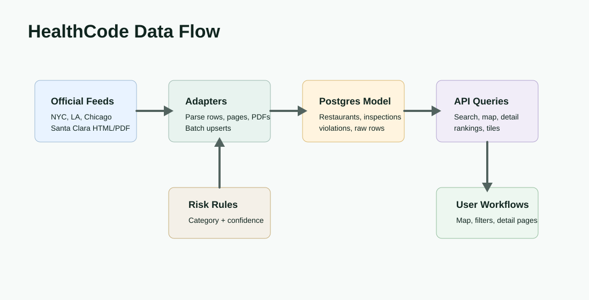

Problem
Restaurant inspection data is public, but it is scattered across different source formats, jurisdictions, schemas, and publication habits. A useful product has to make that information searchable and geographically explorable while keeping source-level detail available for review.
Solution
HealthCode normalizes inspection feeds into a PostgreSQL-backed domain model for restaurants, inspections, violations, risk tags, and ingest runs. The React frontend gives users map, search, ranking, and detail workflows while the Express API applies validation, response caps, and privacy-conscious request logging.
NYC restaurant inspections are the primary staging dataset. A separate Santa Clara adapter discovers facility histories, caches inspection PDFs, and parses major and minor violation sections into the same schema.
Data Flow

Design Decisions
Adapter-Based Ingestion
Each jurisdiction can expose data differently, so ingestion is split into adapters instead of forcing one brittle import path.
Raw-Row Traceability
Normalized records retain links back to source rows and ingest runs so quality issues can be debugged without guessing.
Safer Public Search
The API uses parameterized queries, wildcard escaping, query length limits, and control-character rejection before hitting search endpoints.
Map-Friendly Responses
Map and ranking endpoints are shaped for bounded responses, cached behavior, and frontend scanning rather than unlimited exports.
Operations And Reliability
The workflow uses GitHub Actions for migrations, sample ingest, risk backfill, tests, and frontend build checks. Scheduled staging checks verify the public frontend and API health every 30 minutes, with deeper database-backed smoke checks on demand. Render runs a daily NYC ingestion job that pulls incrementally and runs a full reconciliation weekly.
Recent Engineering
Stopping Database Growth
NYC Open Data issues new row IDs on every fetch, so each full run appended another copy of the dataset, reaching 7.6 million rows and 20 GB (93.5% of the database). The fix keeps one current snapshot of raw rows and adds cache headers to the nine read endpoints.
Self-Hosted Basemap
OpenStreetMap's tile policy rules out consumer apps loading its tiles, so the maps now use a bundled NYC vector basemap (Protomaps PMTiles, zoom 0 to 14) that scripts extract and verify.
Mobile App
An NYC-only React Native (Expo) app for iOS and Android runs on the same API, with native maps, on-device clustering, grade and cuisine filters, search, inspection history, and rankings. It has preview and production build profiles but no app-store release yet.